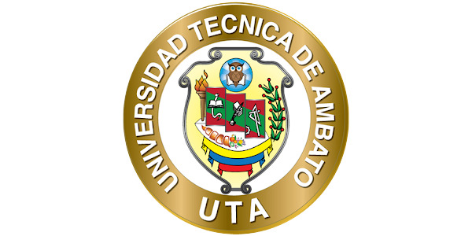

La FISEI ofrece diversas carreras de pregrado en modalidad presencial, cada una con una duración aproximada de 9 a 10 semestres:
Enfocada en el desarrollo de software, bases de datos y redes.
Especializada en sistemas electrónicos, telecomunicaciones y automatización.
Orienta a la optimización de procesos productivos mediante tecnologías automatizadas.
Centrada en la gestión de infraestructuras tecnológicas y seguridad informática.
Dirigida al diseño y mantenimiento de sistemas de comunicación modernos.
Dedicada al análisis, diseño y desarrollo de aplicaciones informáticas.